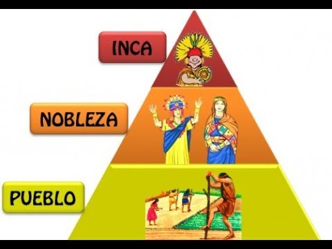

Organización social del tahuantinsuyo
El tahuantinsuyo fue un imperio prehispánico que se desarrolló en América del sur , específicamente en la región andina que hoy comprende Perú, Bolivia, Ecuador, Chile y Argentina. La organización social del tahuantinsuyo era compleja y se basaba en una estructura jerárquica.
La sociedad inca era jerárquica, distinguiéndose en ella grupos privilegiados y de personas comunes. Existían dos principios fundamentales: La recíprocidad y la redistribución. Estos , posibilitaron la colaboración en las distintas tareas y el intercambio de los productos obtenidos al interior de la comunidad y que todo aquello entregado a las autoridades imperiales fuera repartido entre las distintas comunidades, pudiendo así contar con recursos que no producían o que les fueran escasos. En el tahuantinsuyo existieron las siguientes clases sociales:
